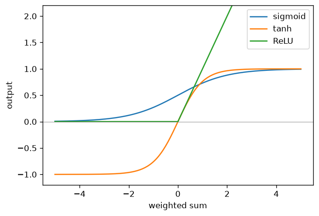
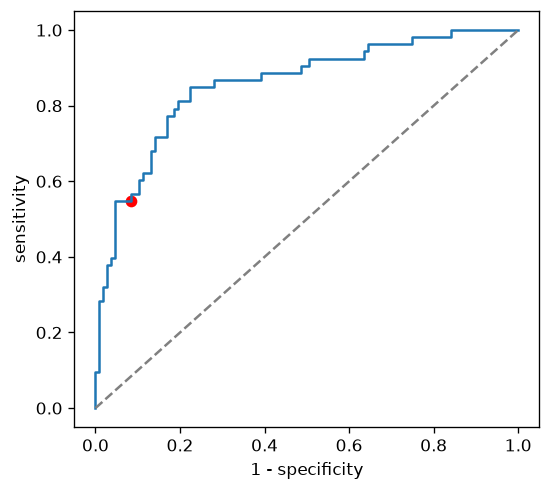
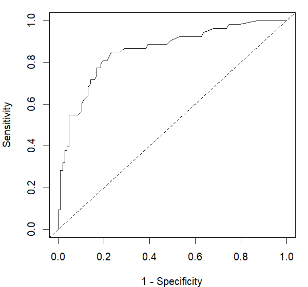

[11주차] 분류 분석 (2): 앙상블, 인공신경망, 모형 평가
빅데이터개론
11주차
분류 분석 (2): 앙상블, 인공신경망, 모형 평가
2027학년도 「빅데이터개론」의 준비 중인 교재입니다. 편집 상태를 검토하기 위해 미리 공개한 것으로, 수업 전에 내용과 순서가 바뀔 수 있습니다.
학사 13주차 · 교재 11 · 3부 데이터 분석 · ADsP 3과목 데이터분석 > 정형 데이터 마이닝 (분류분석)
교재 10에서는 자료를 훈련용과 검증용으로 나누고 로지스틱 회귀와 의사결정나무로 분류 모형을 만들었다. 이 장은 그 뒤를 잇는 세 가지를 다룬다. 모형 여러 개를 합치는 앙상블, 신경 세포의 신호 전달을 본뜬 인공신경망, 분류 모형이 얼마나 잘 맞히는지를 재는 평가 지표다.
시험은 앙상블 세 기법의 차이와 활성화 함수의 성질을 묻고, 오분류표에서 평가 지표를 계산하게 한다. 오분류표는 행과 열이 문항마다 다르게 놓이므로, 계산에 앞서 표의 방향을 읽는 연습이 필요하다. 분석은 파이썬으로 실행하며, 인공신경망은 개념만 다루고 모형을 코드로 적합하지 않는다. 장의 끝에서는 같은 모형을 R로 적합한 출력과 오분류표를 읽는다.
학습 목표
- 배깅, 부스팅, 랜덤 포레스트의 차이를 표본을 뽑는 방법과 모형을 합치는 방법으로 설명한다.
- 인공신경망의 구조와 활성화 함수를 구분하고, 은닉층의 수와 기울기 소실 문제를 설명한다.
- 오분류표의 네 칸에서 정분류율, 오분류율, 정밀도, 재현율(민감도), 특이도, F1을 계산하고, 상황에 맞는 지표를 고른다.
- ROC 곡선의 두 축과 AUC를 해석하고, 이익 도표에서 향상도를 읽는다.
- R의
glm()요약 출력과table()출력에서 계수의 유의성과 오분류표의 방향을 읽는다.
준비 사항
| 항목 | 내용 |
|---|---|
| 실습 노트북 | ADsP_11주차_실습_학생용.ipynb. 절의 이름은 「따라 하기 1」~「따라 하기 4」와 「중심 실습」이다 |
| 자료 | pima.csv. 피마 인디언 여성 532명의 당뇨 검사 자료다. 자료 폴더의 위치는 노트북 첫 코드 셀의 DATA에 적혀 있다 |
| 앞 장과의 연계 | 교재 10의 데이터 분할, 붓스트랩, 과대적합, 로지스틱 회귀, 의사결정나무를 전제로 한다. 교재 06의 제1종 오류와 제2종 오류를 다시 쓴다 |
| 실습 환경 | 접속과 자료를 받는 방법은 부록 A에 있다 |
1. 앙상블
1.1 앙상블의 뜻
앙상블(ensemble)은 모형을 여러 개 만들고 그 예측을 합쳐서 최종 예측을 내는 방법이다. 의사결정나무 하나는 훈련용 자료가 조금만 달라져도 나무의 모양이 크게 바뀐다(교재 10의 4.6절). 이렇게 자료에 따라 결과가 흔들리는 모형을 여러 개 만들어 합치면, 모형마다 다른 방향으로 틀린 부분이 서로 지워져 예측이 안정된다. 분류에서는 가장 많은 모형이 고른 범주를 택하는 다수결을 쓰고, 수치를 예측할 때에는 평균을 쓴다.
앙상블은 모형 하나보다 예측이 안정적이고 과대적합이 줄어든다. 그 대신 모형이 여러 개이므로 나무 그림 한 장처럼 규칙을 읽을 수 없어 해석이 어렵고, 계산이 많다. 모형을 어떻게 여러 개 만드느냐에 따라 배깅, 부스팅, 랜덤 포레스트로 나뉜다.
1.2 배깅
배깅(bagging)은 붓스트랩 표본을 여러 개 뽑아 표본마다 모형을 만들고, 그 결과를 합치는 방법이다. 이름은 bootstrap aggregating을 줄인 것이다.
- 훈련용 자료에서 복원 추출로 크기가 같은 표본을 여러 개 뽑는다. 이 표본이 붓스트랩 표본이다.
- 붓스트랩 표본마다 모형을 하나씩 만든다.
- 모형들의 예측을 다수결(분류)이나 평균(수치 예측)으로 합친다.
자료가 여섯 개(1번~6번)일 때 붓스트랩 표본 하나는 예를 들어 2, 2, 5, 1, 6, 5가 된다. 2번과 5번은 두 번 뽑혔고 3번과 4번은 한 번도 뽑히지 않았다. 자료가 많을 때 붓스트랩 표본 하나에 한 번도 뽑히지 않는 자료는 전체의 약 36.8%다(교재 10의 2.2절). 표본마다 들어간 자료가 다르므로 모형도 조금씩 다르게 만들어진다. 배깅의 모형들은 서로의 결과를 쓰지 않으므로 동시에 만들 수 있다. 배깅은 나무처럼 자료에 따라 결과가 크게 흔들리는 모형, 즉 분산이 큰 모형에 쓸 때 효과가 크다.
1.3 부스팅
부스팅(boosting)은 모형을 차례로 만들면서, 앞 모형이 잘못 분류한 관측값에 더 큰 가중치를 주는 방법이다.
- 처음에는 모든 관측값에 같은 가중치를 주고 단순한 모형(약한 분류 모형)을 만든다. 분리를 한 번만 하는 나무가 흔히 쓰인다.
- 이 모형이 잘못 분류한 관측값의 가중치를 높이고, 맞게 분류한 관측값의 가중치를 낮춘다.
- 가중치가 바뀐 자료로 다음 모형을 만든다. 다음 모형은 앞 모형이 틀린 관측값을 맞히는 데 집중한다.
- 이 과정을 되풀이한 뒤, 모형들의 예측을 합친다. 성능이 좋은 모형의 예측에 더 큰 비중을 둔다.
부스팅은 약한 모형 여러 개를 이어 붙여 강한 모형 하나를 만든다. 배깅보다 예측 오차가 작게 나오는 경우가 많다. 그러나 잘못 분류된 관측값에 계속 집중하므로 이상값의 영향을 받기 쉽고, 되풀이가 지나치면 과대적합이 생긴다. 앞 모형의 결과가 있어야 다음 모형을 만들 수 있으므로 모형을 동시에 만들 수 없다. 대표 알고리즘은 에이다부스트(AdaBoost), 그래디언트 부스팅(GBM), XGBoost다.
1.4 랜덤 포레스트
랜덤 포레스트(random forest)는 배깅에 변수의 임의 선택을 더한 방법이다. 모형은 의사결정나무다.
- 붓스트랩 표본을 여러 개 뽑는다(배깅과 같다).
- 표본마다 나무를 만든다. 이때 마디를 나눌 때마다 전체 독립 변수 가운데 일부를 임의로 뽑고, 뽑힌 변수 안에서만 분리 변수를 고른다.
- 나무들의 예측을 다수결이나 평균으로 합친다.
배깅만 쓰면 영향이 큰 변수 하나가 모든 나무의 뿌리 마디에 나타나서 나무들이 서로 닮는다. 닮은 나무는 같은 곳에서 함께 틀리므로, 합쳐도 얻는 것이 적다. 분리 변수의 후보를 임의로 제한하면 나무들이 서로 달라지고, 합쳤을 때 예측이 더 안정된다.
랜덤 포레스트의 나무는 가지치기를 하지 않고 크게 키운다. 나무 하나하나는 과대적합되어 있으나 여러 그루를 합치면서 과대적합이 줄어든다. 나무가 수백 그루이므로 규칙을 그림으로 읽을 수 없다. 대신 각 변수가 분류에 기여한 정도를 수로 나타낸 변수 중요도를 내놓는다. 실습에서 쓰는 scikit-learn은 원래의 다수결 대신 나무들이 낸 범주별 확률을 평균하여 범주를 정한다. 개념은 같다.
1.5 세 기법의 비교
| 구분 | 배깅 | 부스팅 | 랜덤 포레스트 |
|---|---|---|---|
| 표본을 뽑는 방법 | 붓스트랩. 모든 관측값이 뽑힐 확률이 같다 | 앞 모형이 잘못 분류한 관측값에 큰 가중치를 준다 | 붓스트랩 |
| 분리에 쓰는 변수 | 모든 변수 | 모든 변수 | 분리할 때마다 임의로 뽑은 일부 변수 |
| 모형을 만드는 순서 | 서로 독립이다. 동시에 만들 수 있다 | 차례로 만든다. 앞 모형의 결과를 쓴다 | 서로 독립이다. 동시에 만들 수 있다 |
| 합치는 방법 | 다수결, 평균 | 모형의 성능에 따라 비중을 달리한 다수결 | 다수결, 평균 |
| 유의점 | 모형들이 서로 닮으면 효과가 작다 | 이상값에 민감하다. 과대적합될 수 있다 | 해석이 어렵다. 변수 중요도를 본다 |
따라 하기
노트북의 「따라 하기 1」을 실행한다. 첫 세 셀은 자료를 읽는다.
(532, 8)
npreg glu bp skin bmi ped age type
0 5 86 68 28 30.2 0.364 24 No
1 7 195 70 33 25.1 0.163 55 Yes
2 5 77 82 41 35.8 0.156 35 No
3 0 165 76 43 47.9 0.259 26 No
4 0 107 60 25 26.4 0.133 23 No
type
No 355
Yes 177
Name: count, dtype: int64| 열 | 뜻 |
|---|---|
npreg |
임신 횟수 |
glu |
혈당. 포도당 부하 검사에서 잰 혈장 포도당 농도 |
bp |
이완기 혈압(mmHg) |
skin |
위팔 뒤쪽의 피부 두께(mm) |
bmi |
체질량 지수 |
ped |
가족력 지수. 가족의 당뇨 병력을 하나의 수로 나타낸 값 |
age |
나이 |
type |
당뇨 여부(Yes, No). 맞히려는 값이다 |
분류 분석에서는 관심의 대상이 되는 범주를 양성(positive), 나머지를 음성(negative)이라 한다. 이 장에서는 당뇨인 Yes를 양성으로 둔다.
- 확인 1 자료의 모양이
(532, 8)이고,type은No355명,Yes177명으로 나왔다.
넷째 셀은 교재 10과 같은 방법(test_size=0.3, random_state=42, stratify=y)으로 자료를 나눈다.
(372, 7) (160, 7)
type
No 107
Yes 53
Name: count, dtype: int64- 확인 2 훈련용 372명과 검증용 160명으로 나뉘고, 검증용의
Yes가 53명으로 나왔다.
다섯째 셀은 깊이를 제한하지 않은 의사결정나무 하나를 만들어 훈련용과 검증용의 정분류율을 출력한다. 여섯째 셀은 같은 훈련용 자료로 앙상블 세 가지를 기본 설정으로 만든다.
bag = BaggingClassifier(n_estimators=100, random_state=42) # 배깅. 기본 모형은 의사결정나무다
bag.fit(X_train, y_train)
forest = RandomForestClassifier(n_estimators=100, random_state=42) # 랜덤 포레스트. 바꾸어 볼 값: n_estimators=10
forest.fit(X_train, y_train)
boost = AdaBoostClassifier(random_state=42) # 부스팅(에이다부스트)
boost.fit(X_train, y_train)
print("bagging ", round(bag.score(X_valid, y_valid), 3))
print("forest ", round(forest.score(X_valid, y_valid), 3))
print("boosting", round(boost.score(X_valid, y_valid), 3))1.0 0.731
bagging 0.781
forest 0.781
boosting 0.806첫 줄이 나무 하나의 결과다. score는 정분류율(정확도)을 돌려준다. 나무 하나는 훈련용 자료를 모두 맞혔으나(1.0) 검증용 자료에서는 0.731에 그쳤다. 과대적합이다(교재 10의 2.3절). 앙상블 세 가지는 모두 검증용 정분류율이 나무 하나보다 높다. 이 순위는 자료를 한 번 나눈 결과이며 random_state를 바꾸면 달라질 수 있다.
- 확인 3 나무 하나의 정분류율이 훈련용 1.0, 검증용 0.731로 나왔다.
- 확인 4 검증용 정분류율이 배깅 0.781, 랜덤 포레스트 0.781, 부스팅 0.806으로 나왔다.
마지막 셀은 랜덤 포레스트의 변수 중요도를 큰 순서로 출력한다. 중요도는 모두 더하면 1이다.
glu 0.277
bmi 0.156
age 0.150
ped 0.129
skin 0.117
npreg 0.090
bp 0.082
dtype: float64- 확인 5 변수 중요도가 가장 큰 변수는
glu(0.277), 가장 작은 변수는bp(0.082)로 나왔다.
변수 중요도는 그 변수로 분리하여 불순도가 줄어든 양을 나무마다 더하여 평균한 값이다. 혈당이 당뇨의 분류에 가장 크게 기여하였다. 다만 이 값은 훈련용 자료로 계산한 것이며, 회귀 계수처럼 영향의 방향(양과 음)을 알려 주지 않는다.
2. 인공신경망
2.1 구조
인공신경망(artificial neural network)은 신경 세포가 신호를 받아 다음 세포로 넘기는 방식을 본뜬 모형이다. 계산을 하는 단위를 마디(노드, 뉴런)라 하고, 마디가 줄지어 놓인 것을 층이라 한다.
| 층 | 하는 일 |
|---|---|
| 입력층 | 독립 변수의 값을 받는다. 마디의 수는 독립 변수의 수와 같다 |
| 은닉층 | 입력층과 출력층 사이에 있는 층이다. 앞 층의 값을 받아 계산한 값을 다음 층으로 넘긴다. 하나일 수도, 여러 개일 수도 있다 |
| 출력층 | 최종 예측값을 낸다 |
입력층 은닉층 출력층
x1 ──┐
x2 ──┼──▶ 마디 (가중합 → 활성화 함수) ──┐
x3 ──┘ ├──▶ 마디 (가중합 → 활성화 함수) ──▶ 예측값
└──▶ 마디 (가중합 → 활성화 함수) ──┘마디와 마디를 잇는 선마다 가중치가 붙어 있다. 가중치는 앞 마디의 값이 다음 마디에 얼마나 강하게 전달되는지를 정하는 수이며, 회귀 분석의 회귀 계수에 해당한다. 마디 하나는 앞 층에서 온 값에 가중치를 곱하여 모두 더하고 편향이라는 상수를 더한 뒤(가중합), 그 가중합을 활성화 함수에 넣어 나온 값을 다음 층으로 넘긴다.
은닉층이 없는 신경망을 단층 퍼셉트론이라 한다. 단층 퍼셉트론은 직선 하나로 나눌 수 있는 자료만 분류한다. 은닉층이 하나 이상 있는 신경망이 다층 퍼셉트론이며, 직선으로 나눌 수 없는 복잡한 경계를 만들 수 있다. 은닉층이 없고 활성화 함수가 시그모이드 함수인 신경망은 로지스틱 회귀와 식의 모양이 같다.
2.2 활성화 함수
활성화 함수는 가중합을 마디의 출력으로 바꾸는 함수다. 활성화 함수가 직선이 아니어야 층을 쌓았을 때 복잡한 관계를 나타낼 수 있다.
| 활성화 함수 | 출력의 범위 | 특징 |
|---|---|---|
| 계단 함수 | 0 또는 1 | 가중합이 0보다 크면 1, 아니면 0을 낸다 |
| 부호 함수 | -1 또는 1 | 가중합이 양수이면 1, 음수이면 -1을 낸다 |
| 시그모이드 함수 | 0과 1 사이 | S자 모양의 곡선이다. 로지스틱 회귀에서 확률을 구하는 함수와 같다. 출력을 확률로 읽을 수 있다 |
| tanh 함수 | -1과 1 사이 | 시그모이드 함수와 같은 S자 모양이고, 0을 중심으로 위아래가 대칭이다 |
| ReLU 함수 | 0 이상 | 가중합이 음수이면 0, 양수이면 가중합을 그대로 낸다. 계산이 간단하고 기울기 소실이 덜 생긴다 |
| 소프트맥스 함수 | 0과 1 사이. 모두 더하면 1 | 출력 마디 여러 개의 값을 한꺼번에 받아 범주별 확률로 바꾼다. 범주가 셋 이상인 분류의 출력층에 쓴다 |
2.3 역전파와 기울기 소실
신경망을 학습시킨다는 것은 예측이 실제 값에 가까워지도록 가중치를 정한다는 뜻이다. 가중치를 임의의 값으로 둔 뒤 다음을 되풀이한다.
- 입력층에서 출력층 방향으로 계산하여 예측값을 얻는다.
- 예측값과 실제 값의 차이(오차)를 구한다.
- 오차를 출력층에서 입력층 방향으로 거꾸로 전달하면서, 가중치마다 오차에 얼마나 기여했는지(기울기)를 계산하고 오차가 줄어드는 쪽으로 가중치를 조금 고친다.
3번의 방법을 역전파(backpropagation) 알고리즘이라 한다. 오차를 계산하는 방향이 예측의 방향과 반대이기 때문에 붙은 이름이다.
기울기 소실은 층이 많은 신경망에서 역전파를 할 때, 입력층에 가까운 층으로 갈수록 기울기가 0에 가까워져 가중치가 거의 고쳐지지 않는 현상이다. 시그모이드 함수와 tanh 함수는 가중합이 아주 크거나 아주 작은 곳에서 곡선이 평평하여 기울기가 0에 가깝다. 이런 값이 층마다 곱해지면서 기울기가 사라진다. 은닉층의 활성화 함수로 ReLU 함수를 쓰면 이 문제가 줄어든다.
2.4 은닉층과 은닉 마디의 수
은닉층의 수와 은닉층에 든 마디(은닉 마디)의 수는 분석하는 사람이 정한다. 너무 많으면 가중치가 많아져 훈련용 자료의 우연한 무늬까지 외우므로 과대적합이 생기고 계산 시간이 길어진다. 너무 적으면 자료에 있는 복잡한 관계를 담지 못하여 과소적합이 생긴다. 알맞은 수를 정하는 공식은 없으므로, 수를 바꾸어 가며 검증용 자료의 성능을 견주어 정한다.
2.5 장점과 단점
| 구분 | 내용 |
|---|---|
| 장점 | 변수 사이의 복잡한 비선형 관계를 나타낼 수 있다. 분류와 수치 예측에 모두 쓴다. 자료에 잡음이 섞여 있어도 성능이 크게 떨어지지 않는다 |
| 단점 | 가중치가 많고 서로 얽혀 있어 결과를 해석하기 어렵다. 은닉층과 은닉 마디의 수 같은 설정을 정해야 한다. 가중치의 초깃값에 따라 결과가 달라지고, 전체에서 가장 좋은 값이 아닌 곳(지역 최적해)에서 학습이 멈출 수 있다. 변수의 단위에 민감하므로 표준화가 필요하다. 학습에 시간이 오래 걸린다 |
따라 하기
노트북의 「따라 하기 2」를 실행한다. 신경망을 적합하지는 않고, 마디 하나가 하는 계산을 숫자로 따라간다.
x = np.array([2, 1, 3]) # 앞 층에서 온 값
w = np.array([0.5, -1, 0.3]) # 가중치. 바꾸어 볼 값: [0.5, -1, -0.3]
b = 0.1 # 편향
z = np.sum(x * w) + b # 가중합
print(round(z, 3))가중합은 2 × 0.5 + 1 × (-1) + 3 × 0.3 + 0.1 = 1.0이다. 다음 셀은 이 가중합을 활성화 함수에 넣고, 그다음 셀은 가중합이 1.0과 -1.0일 때 다섯 함수(계단, 부호, 시그모이드, tanh, ReLU)의 출력을 차례로 출력한다.
1.0
step 1
sigmoid 0.731
tanh 0.762
relu 1.0
1.0 1 1 0.731 0.762 1.0
-1.0 0 -1 0.269 -0.762 0.0- 확인 6 가중합이 1.0이고, 시그모이드 함수의 출력이 0.731, tanh 함수의 출력이 0.762로 나왔다.
- 확인 7 가중합이 -1.0일 때 계단 함수는 0, 부호 함수는 -1, ReLU 함수는 0.0을 냈다.
소프트맥스 함수의 셀은 출력 마디 세 개의 가중합 2, 1, 0을 확률로 바꾼다.
[0.665 0.245 0.09 ] 1.0- 확인 8 소프트맥스 함수의 출력이 0.665, 0.245, 0.09이고 합이 1.0으로 나왔다.
마지막 셀은 세 함수의 그래프를 그린다.

시그모이드 곡선은 0과 1 사이에, tanh 곡선은 -1과 1 사이에 있고, 가중합이 -4보다 작거나 4보다 큰 곳에서 거의 평평하다. 기울기 소실이 생기는 자리다. ReLU는 0보다 큰 쪽에서 기울기가 1로 일정하다. 첫 셀의 가중치를 바꾸어 실행하면 가중합이 -0.8이 되어 시그모이드 출력이 0.5보다 작아진다.
3. 그 밖의 분류 기법
이름과 핵심 생각을 구분할 수 있으면 된다.
| 기법 | 핵심 생각 | 특징 |
|---|---|---|
| k-최근접 이웃(k-NN) | 새 관측값과 가장 가까운 훈련용 관측값 k개를 찾아, 그 가운데 가장 많은 범주로 분류한다 | 모형을 미리 만들지 않고 분류할 때마다 거리를 계산한다. 거리를 쓰므로 변수의 단위에 영향을 받는다 |
| 서포트 벡터 머신(SVM) | 두 범주를 가르는 경계 가운데, 경계에서 가장 가까운 관측값까지의 거리(마진)가 가장 큰 경계를 고른다 | 경계에 가장 가까운 관측값을 서포트 벡터라 한다. 커널이라는 함수를 써서 곡선 모양의 경계도 만든다 |
| 나이브 베이즈 | 베이즈 정리로 관측값이 각 범주에 속할 확률을 계산하고, 확률이 가장 높은 범주로 분류한다 | 독립 변수들이 서로 독립이라고 가정한다. 계산이 빠르다 |
k-최근접 이웃에서 k가 너무 작으면 가까이 있는 관측값 한두 개에 결과가 좌우되어 과대적합이 생기고, k가 너무 크면 멀리 있는 관측값까지 끌어들여 범주의 경계가 무뎌진다.
따라 하기
노트북의 「따라 하기 3」을 실행한다. 이웃의 수 k를 1, 5, 15, 51로 바꾸어 가며 k-최근접 이웃 모형을 만든다. 출력은 차례로 k, 훈련용 정분류율, 검증용 정분류율이다.
1 1.0 0.625
5 0.833 0.731
15 0.785 0.75
51 0.78 0.787- 확인 9 k가 1일 때 훈련용 1.0, 검증용 0.625이고, k가 51일 때 훈련용 0.78, 검증용 0.787로 나왔다.
k가 1이면 훈련용 관측값 하나하나가 자기 자신을 가장 가까운 이웃으로 삼으므로 훈련용 정분류율이 1.0이 된다. 검증용 정분류율은 가장 낮다. 과대적합이다. k가 커질수록 두 정분류율이 가까워진다. 이 자료의 변수는 단위가 서로 달라(혈당은 수십에서 백여, 가족력 지수는 1 안팎) 거리가 혈당에 크게 좌우된다. 변수를 표준화한 뒤 거리를 재는 것이 보통이며, 그 코드는 후속 과목에서 다룬다.
4. 모형 평가
4.1 오분류표
분류 모형의 평가는 검증용 자료에서 실제 범주와 예측한 범주를 견주는 데서 시작한다. 실제 범주와 예측한 범주를 교차표로 놓아 건수를 적은 표를 오분류표(혼동 행렬, confusion matrix)라 한다. 표의 네 칸에는 이름이 있다.
| 예측 양성 | 예측 음성 | |
|---|---|---|
| 실제 양성 | TP 참 양성(true positive) | FN 거짓 음성(false negative) |
| 실제 음성 | FP 거짓 양성(false positive) | TN 참 음성(true negative) |
이름은 뒤 글자부터 읽는다. 뒤 글자(P, N)는 모형이 예측한 범주이고, 앞 글자(T, F)는 그 예측이 맞았는지 틀렸는지다. FN은 “음성이라고 예측했고 그 예측이 틀렸다”는 뜻이므로 실제로는 양성이다. FP는 “양성이라고 예측했고 그 예측이 틀렸다”는 뜻이므로 실제로는 음성이다.
오분류표의 두 가지 틀린 칸은 가설 검정의 두 오류와 이어진다(교재 06). “이 사람은 음성이다”를 귀무 가설로 두면, 실제 음성을 양성으로 판정한 FP는 제1종 오류에 해당하고, 실제 양성을 음성으로 판정한 FN은 제2종 오류에 해당한다.
4.2 평가 지표
| 지표 | 식 | 뜻 |
|---|---|---|
| 정분류율(정확도, accuracy) | (TP + TN) ÷ 전체 | 전체 가운데 맞게 분류한 비율 |
| 오분류율(error rate) | (FP + FN) ÷ 전체 | 전체 가운데 잘못 분류한 비율. 1 - 정분류율과 같다 |
| 정밀도(precision) | TP ÷ (TP + FP) | 양성으로 예측한 것 가운데 실제 양성의 비율 |
| 재현율(recall) | TP ÷ (TP + FN) | 실제 양성 가운데 양성으로 예측한 비율. 민감도(sensitivity), 참 양성률과 같은 값이다 |
| 특이도(specificity) | TN ÷ (TN + FP) | 실제 음성 가운데 음성으로 예측한 비율. 참 음성률이라고도 한다 |
| F1 | 2 × 정밀도 × 재현율 ÷ (정밀도 + 재현율) | 정밀도와 재현율의 조화 평균 |
지표는 분모로 구분한다. 정밀도의 분모는 양성으로 예측한 것의 합(TP + FP)이고, 재현율의 분모는 실제 양성의 합(TP + FN), 특이도의 분모는 실제 음성의 합(TN + FP)이다. 실제 음성 가운데 양성으로 잘못 예측한 비율 FP ÷ (TN + FP)를 거짓 양성률이라 하며 1 - 특이도와 같다.
어느 공장의 설비 200대를 대상으로 고장 여부를 예측한 가상의 오분류표로 계산한다. 고장이 양성이다.
| 예측 고장 | 예측 정상 | 합 | |
|---|---|---|---|
| 실제 고장 | 30 | 10 | 40 |
| 실제 정상 | 20 | 140 | 160 |
| 합 | 50 | 150 | 200 |
| 지표 | 계산 | 값 |
|---|---|---|
| 정분류율 | (30 + 140) ÷ 200 | 0.85 |
| 오분류율 | (20 + 10) ÷ 200 | 0.15 |
| 정밀도 | 30 ÷ 50 | 0.60 |
| 재현율(민감도) | 30 ÷ 40 | 0.75 |
| 특이도 | 140 ÷ 160 | 0.875 |
| F1 | 2 × 0.60 × 0.75 ÷ (0.60 + 0.75) = 0.90 ÷ 1.35 | 0.667 |
F1에 쓰는 조화 평균은 두 값 가운데 작은 쪽에 가깝게 나온다. 정밀도가 1.0이고 재현율이 0.1이면 산술 평균은 0.55이지만 F1은 2 × 1.0 × 0.1 ÷ 1.1 ≈ 0.18이다.
4.3 지표의 선택
정분류율은 양성이 드문 자료에서 모형의 성능을 제대로 보여 주지 못한다. 제품 1,000개 가운데 불량품이 10개인 공정에서 어떤 모형이 제품을 모두 정상으로 예측하면, 불량을 양성으로 둘 때 TP 0, FN 10, FP 0, TN 990이다. 정분류율은 0.99이지만 재현율은 0 ÷ 10 = 0이다. 정분류율이 높은 까닭은 정상 제품이 많기 때문이고, 모형이 좋기 때문이 아니다.
| 상황 | 중시하는 지표 | 까닭 |
|---|---|---|
| 양성을 놓치면 손실이 크다 (질병의 선별 검사, 설비의 고장 예측, 부정 거래 탐지) | 재현율(민감도) | FN을 줄여야 한다 |
| 음성을 양성으로 잘못 판정하면 손실이 크다 (정상 우편을 광고 우편함으로 보내는 일, 정상 거래의 차단) | 정밀도 | FP를 줄여야 한다 |
| 양성이 드물고, 정밀도와 재현율을 함께 높여야 한다 | F1 | 한쪽만 높은 모형을 걸러 낸다 |
| 두 범주의 크기가 비슷하고 두 오류의 비용도 비슷하다 | 정분류율 | 한 값으로 전체를 요약할 수 있다 |
로지스틱 회귀처럼 확률을 내는 모형은 확률이 분류 기준값(cutoff) 이상이면 양성으로 예측한다. 기준값을 낮추면 양성으로 예측하는 건수가 늘어 재현율은 오르지만, 음성까지 양성으로 예측하게 되어 정밀도와 특이도는 대체로 내려간다. 기준값을 높이면 반대가 된다. 0.5는 관례일 뿐이며 두 오류의 비용에 따라 정한다.
4.4 ROC 곡선과 AUC
ROC 곡선(receiver operating characteristic curve)은 분류 기준값을 1에서 0까지 바꾸어 가며 얻은 (1 - 특이도, 민감도)의 점을 이은 곡선이다. 가로축은 1 - 특이도(거짓 양성률)이고 세로축은 민감도(재현율)다.
- 곡선 위의 점 하나는 기준값 하나에 해당하고, 오분류표 하나에 해당한다.
- 기준값이 1이면 모두 음성으로 예측하므로 점은 왼쪽 아래 (0, 0)이고, 기준값이 0이면 모두 양성으로 예측하므로 오른쪽 위 (1, 1)이다.
- 왼쪽 위 모서리 (0, 1)은 민감도와 특이도가 모두 1인 자리다. 곡선이 왼쪽 위에 가까울수록 좋은 모형이다.
- 대각선은 무작위로 분류할 때의 선이다. 곡선이 대각선에 가까울수록 쓸모없는 모형이다.
AUC(area under the curve)는 ROC 곡선 아래의 넓이다. 1이면 양성과 음성을 완벽하게 가르고, 0.5이면 무작위로 분류하는 것과 같다. 실제 양성 하나와 실제 음성 하나를 임의로 뽑았을 때 모형이 양성 쪽에 더 높은 확률을 줄 가능성으로 풀이하며, 모든 기준값을 한꺼번에 본 값이므로 기준값을 바꾸어도 변하지 않는다. AUC에 등급을 매기는 눈금은 문헌마다 다르고 공인된 기준이 없다. 로지스틱 회귀의 교과서인 Hosmer와 Lemeshow의 『Applied Logistic Regression』에서 비롯된 눈금은 0.7~0.8을 수용 가능, 0.8~0.9를 우수, 0.9 이상을 탁월로 부른다.
4.5 이익 도표와 향상도 곡선
이익 도표(gain chart)와 향상도 곡선(lift curve)은 모형이 양성일 확률이 높다고 본 관측값에 실제 양성이 얼마나 몰려 있는지를 보는 도구다. 판촉 대상 고객을 고를 때처럼 확률이 높은 순서로 일부만 골라 쓰는 경우에 본다. 관측값을 양성일 확률이 높은 순서로 정렬하고, 같은 크기의 등급으로 나눈 뒤, 등급마다 세 값을 구한다.
| 값 | 식 | 뜻 |
|---|---|---|
| 반응률 | 그 등급의 실제 양성 수 ÷ 그 등급의 관측값 수 | 등급 안에서 양성이 차지하는 비율 |
| 반응 검출률 | 그 등급의 실제 양성 수 ÷ 전체의 실제 양성 수 | 전체 양성 가운데 그 등급이 찾아낸 몫 |
| 향상도 | 그 등급의 반응률 ÷ 전체의 양성 비율 | 무작위로 고를 때보다 양성이 몇 배 많은가 |
반응 검출률을 위의 등급부터 차례로 더한 값(누적 반응 검출률)을 그린 그림이 이익 도표이고, 등급별 향상도를 그린 그림이 향상도 곡선이다. 향상도가 1이면 무작위로 고르는 것과 같다. 좋은 모형은 상위 등급의 향상도가 크고 아래 등급으로 갈수록 빠르게 작아진다. 등급에 따라 향상도가 들쭉날쭉하거나 모든 등급에서 1에 가까우면 예측력이 낮은 모형이다.
따라 하기
노트북의 「따라 하기 4」를 실행한다. 첫 셀은 훈련용 자료로 로지스틱 회귀 모형을 적합하고 계수를 출력한다. 종속 변수는 Yes이면 1, No이면 0인 열 yes로 바꾸어 넣는다.
Intercept -9.4368
npreg 0.1365
glu 0.0327
bp -0.0047
skin 0.0167
bmi 0.0773
ped 0.9939
age 0.0258
dtype: float64- 확인 10
glu의 계수가 0.0327,bp의 계수가 -0.0047로 나왔다.
혈압(bp)을 뺀 여섯 변수의 계수가 양수다. 혈당이 높을수록, 체질량 지수가 클수록 당뇨일 확률이 높게 계산된다(교재 10의 3.4절). 둘째 셀은 검증용 자료의 사람마다 Yes일 확률을 구한다.
actual prob
2 No 0.108
12 Yes 0.773
13 Yes 0.315
14 No 0.254
18 Yes 0.362
21 No 0.135
22 No 0.057
30 No 0.159기준값을 0.5로 두면 12번 행(0.773)은 Yes로, 13번 행(0.315)은 No로 예측된다. 13번 행은 실제로 Yes이므로 FN이 된다. 셋째 셀은 기준값 0.5의 오분류표다.
predicted No Yes
actual
No 98 9
Yes 24 29- 확인 11 12번 행의 확률이 0.773, 13번 행의 확률이 0.315로 나왔다.
- 확인 12 오분류표의 첫째 행이
98 9, 둘째 행이24 29로 나왔다.
행이 실제(actual), 열이 예측(predicted)이다. 출력은 범주를 알파벳 순서로 놓으므로 음성인 No가 먼저 나오고 TP 29가 오른쪽 아래에 있다. 4.1절의 배치(양성이 먼저)로 옮기면 TP 29, FN 24, FP 9, TN 98이다.
넷째 셀은 기준값 다섯 개에서 민감도와 1 - 특이도를 구한다. 특이도는 음성 범주의 재현율이므로 recall_score에 pos_label="No"를 주어 구한다.
cutoff 0.9 sensitivity 0.132 1-specificity 0.009
cutoff 0.8 sensitivity 0.283 1-specificity 0.019
cutoff 0.6 sensitivity 0.434 1-specificity 0.047
cutoff 0.4 sensitivity 0.698 1-specificity 0.14
cutoff 0.2 sensitivity 0.887 1-specificity 0.393
48
AUC 0.857- 확인 13 기준값 0.9에서 민감도 0.132와 1 - 특이도 0.009, 기준값 0.2에서 민감도 0.887과 1 - 특이도 0.393이 나왔다.
- 확인 14
roc_curve가 만든 기준값이 48개이고 AUC가 0.857로 나왔다.
기준값을 낮추면 민감도와 1 - 특이도가 함께 오른다. 실제 양성을 더 많이 찾아내는 대신 실제 음성을 양성으로 잘못 판정하는 일도 늘어난다. roc_curve는 확률이 바뀌는 자리마다 기준값을 두어 점 48개를 만들었다. 이 점들을 이은 ROC 곡선은 중심 실습의 단계 5에서 그린다.
다섯째 셀은 이익 도표의 표를 만든다. 검증용 자료 160명을 Yes일 확률이 높은 순서로 정렬하고 32명씩 다섯 등급으로 나누었다. n은 등급의 사람 수, yes는 실제 Yes의 수, response는 반응률, captured는 반응 검출률, lift는 향상도다.
n yes response captured lift
group
1 32 27 0.844 0.509 2.547
2 32 16 0.500 0.302 1.509
3 32 4 0.125 0.075 0.377
4 32 4 0.125 0.075 0.377
5 32 2 0.062 0.038 0.189
base rate 0.331- 확인 15 1등급의
yes가 27,response가 0.844,captured가 0.509,lift가 2.547로 나왔다.
1등급의 반응률은 27 ÷ 32 ≈ 0.844, 반응 검출률은 27 ÷ 53 ≈ 0.509다. 전체의 양성 비율(base rate)은 53 ÷ 160 ≈ 0.331이므로 1등급의 향상도는 0.844 ÷ 0.331 ≈ 2.547이다. 무작위로 32명을 고를 때보다 양성이 약 2.5배 많다. 3등급부터는 향상도가 1보다 작다. 마지막 셀은 누적 반응 검출률을 출력하고 이익 도표를 그린다.

- 확인 16 누적 반응 검출률이 2등급까지 0.811로 나왔다.
상위 20%만 골라도 전체 양성의 절반(0.509)을, 상위 40%를 고르면 0.811을 찾는다. 점선은 무작위로 고를 때의 선이며, 곡선이 점선보다 위로 멀리 떨어질수록 좋은 모형이다.
5. 중심 실습: 오분류표의 평가 지표 계산
로지스틱 회귀 모형 하나로 검증용 자료의 오분류표를 얻고, 지표 여섯 개를 손으로 계산한 뒤 라이브러리가 계산한 값과 맞춘다. 이어서 분류 기준값을 바꾸어 지표가 어떻게 달라지는지 본다.
준비
노트북의 「따라 하기 1」~「따라 하기 4」를 모두 실행한 상태에서 「중심 실습」 절로 간다. 확률 prob와 ROC 곡선의 점(fpr, tpr)이 「따라 하기 4」에서 만들어지기 때문이다. 손 계산에는 계산기를 써도 되며 값은 소수 셋째 자리까지 적는다.
절차
단계 1. 오분류표의 작성
- 단계 1의 첫 셀을 실행한다.
cutoff는 0.5다. - 둘째 셀을 실행하여 네 칸의 값을 꺼낸다.
- 아래 표에 네 칸의 값과 전체를 적는다.
cutoff = 0.5 # 바꾸어 볼 값: 0.3, 0.7
pred = np.where(prob >= cutoff, "Yes", "No") # 확률이 기준값 이상이면 Yes, 아니면 No
table = pd.crosstab(y_valid, pred, rownames=["actual"], colnames=["predicted"])
print(table)| 칸 | TP | FN | FP | TN | 전체 |
|---|---|---|---|---|---|
| 값 |
TP 29 FN 24 FP 9 TN 98- 확인 17 네 칸이
TP 29 FN 24 FP 9 TN 98로 나왔다.
단계 2. 지표의 수기 계산
- 아래 표의 여섯 지표를 손으로 계산한다. 숫자를 넣은 계산식을 함께 적는다.
- 단계 2의 셀을 실행하여 손으로 계산한 값과 맞춘다.
| 번호 | 지표 | 식 | 숫자를 넣은 계산 | 값 |
|---|---|---|---|---|
| 1 | 정분류율 | (TP + TN) ÷ 전체 | ||
| 2 | 오분류율 | (FP + FN) ÷ 전체 | ||
| 3 | 정밀도 | TP ÷ (TP + FP) | ||
| 4 | 재현율(민감도) | TP ÷ (TP + FN) | ||
| 5 | 특이도 | TN ÷ (TN + FP) | ||
| 6 | F1 | 2 × 정밀도 × 재현율 ÷ (정밀도 + 재현율) |
accuracy 0.794
error rate 0.206
precision 0.763
recall 0.547
specificity 0.916
F1 0.637- 확인 18 손으로 계산한 여섯 값이 0.794, 0.206, 0.763, 0.547, 0.916, 0.637과 같다.
단계 3. 라이브러리의 값과 대조
- 단계 3의 셀을 실행한다.
- 각 함수의 값을 단계 2의 값과 견준다.
print("accuracy_score ", round(accuracy_score(y_valid, pred), 3))
print("precision_score", round(precision_score(y_valid, pred, pos_label="Yes"), 3))
print("recall_score ", round(recall_score(y_valid, pred, pos_label="Yes"), 3))
print("f1_score ", round(f1_score(y_valid, pred, pos_label="Yes"), 3))
print("recall (No) ", round(recall_score(y_valid, pred, pos_label="No"), 3))accuracy_score 0.794
precision_score 0.763
recall_score 0.547
f1_score 0.637
recall (No) 0.916pos_label="Yes"는 양성 범주가 Yes라는 뜻이다. 특이도를 구하는 함수는 따로 없으며, 음성 범주의 재현율(recall (No))이 특이도다.
- 확인 19 라이브러리의 네 값이 단계 2와 같고,
recall (No)가 특이도 0.916과 같게 나왔다.
단계 4. 출력의 방향 읽기
- 단계 4의 두 셀을 실행한다.
- 각 출력에서 TP 29의 자리와 TN 98의 자리를 찾는다.
[[98 9]
[24 29]]
[[29 24]
[ 9 98]]confusion_matrix는 이름표 없이 숫자만 낸다. 행이 실제, 열이 예측이며, 범주의 순서는 따로 정하지 않으면 알파벳 순서(No, Yes)다. 그래서 첫 출력의 왼쪽 위 98은 TN이고 TP 29는 오른쪽 아래에 있다. 둘째 출력은 labels=["Yes", "No"]로 순서를 바꾸어 4.1절의 배치가 되었다.
- 확인 20 첫 출력의 왼쪽 위가 98(TN), 둘째 출력의 왼쪽 위가 29(TP)로 나왔다.
단계 5. ROC 곡선 위의 자리
- 단계 5의 셀을 실행하여 ROC 곡선을 그린다.
- 빨간 점의 가로 좌표와 세로 좌표를 단계 2의 값으로 설명한다.
plt.figure(figsize=(5, 4.5))
plt.plot(fpr, tpr)
plt.plot([0, 1], [0, 1], linestyle="--", color="gray")
plt.scatter(FP / (FP + TN), TP / (TP + FN), color="red")
plt.xlabel("1 - specificity")
plt.ylabel("sensitivity")
plt.show()
print(round(FP / (FP + TN), 3), round(TP / (TP + FN), 3))
0.084 0.547빨간 점의 가로 좌표는 1 - 특이도 = 1 - 0.916 = 0.084이고, 세로 좌표는 재현율 0.547이다. 곡선은 대각선보다 위에 있고 왼쪽 위로 볼록하다.
- 확인 21 빨간 점의 좌표가
0.084 0.547로 나왔다.
값을 바꾸어 보기
단계 1의 cutoff 줄에서 분류 기준값을 0.3과 0.7로 바꾸고, 그 셀부터 단계 5까지 다시 실행한다. 아래 표를 채운다. 기준값 0.5의 줄은 단계 2의 값을 옮겨 적는다.
| 기준값 | TP | FN | FP | TN | 정분류율 | 정밀도 | 재현율 | 특이도 |
|---|---|---|---|---|---|---|---|---|
| 0.3 | ||||||||
| 0.5 | ||||||||
| 0.7 |
- 기준값을 0.5에서 0.3으로 낮추면 양성으로 예측한 사람의 수(TP + FP)는 어떻게 달라지는가. 재현율과 특이도는 각각 어느 쪽으로 움직이는가.
- 기준값 0.3과 0.5의 정분류율을 견준다. 정분류율만으로 두 기준값 가운데 어느 쪽이 나은지 가릴 수 있는가.
- 기준값을 0.5에서 0.7로 높이면 정밀도와 재현율은 각각 어느 쪽으로 움직이는가.
- 기준값을 바꾸면 ROC 곡선의 빨간 점은 어느 쪽으로 옮겨 가는가. AUC는 달라지는가.
- 이 모형을 당뇨 선별 검사에 쓴다고 하자. 당뇨인 사람을 놓치지 않는 것이 중요하다면 세 기준값 가운데 어느 것을 고르겠는가.
- 확인 22 기준값 0.3에서 네 칸이
TP 45 FN 8 FP 25 TN 82이고 정분류율이 0.794로 나왔다. - 확인 23 기준값 0.7에서 정밀도가 0.833, 재현율이 0.377로 나왔다.
완료 기준
| 번호 | 점검 항목 | 점검 방법 | 기준 값 |
|---|---|---|---|
| 1 | 오분류표의 네 칸 | 단계 1의 출력 | TP 29, FN 24, FP 9, TN 98 |
| 2 | 지표 여섯 개의 손 계산 | 단계 2의 출력과 대조 | 0.794, 0.206, 0.763, 0.547, 0.916, 0.637 |
| 3 | 라이브러리와의 일치 | 단계 3의 출력 | 단계 2와 같은 값. 특이도는 recall (No) 0.916 |
| 4 | 출력의 방향 | 단계 4의 두 출력에서 TP의 자리 | 첫 출력은 오른쪽 아래, 둘째 출력은 왼쪽 위 |
| 5 | ROC 곡선의 자리 | 단계 5의 출력 | 0.084, 0.547 |
| 6 | 기준값별 표 | 값을 바꾸어 보기의 표 | 0.3에서 재현율 0.849, 0.7에서 재현율 0.377 |
제출물
- 단계 1과 단계 2의 표(네 칸의 값과 지표 여섯 개의 손 계산)
- 값을 바꾸어 보기의 표와 5번 물음에 대한 해석 한 문장. 고른 기준값과 그 기준값에서의 재현율, 특이도를 넣어 쓴다.
6. R 출력 해석
같은 분석을 R로 실행한 코드와 출력이다. R을 실행하지 않고 읽는다. 시험의 오분류표는 R의 table() 출력과 같은 모양으로 나오므로 방향을 읽는 법을 자세히 다룬다.
6.1 대응표
| 하는 일 | 파이썬 | R |
|---|---|---|
| 로지스틱 회귀 적합 | smf.logit("yes ~ ...", data=train).fit() |
glm(type ~ ., data = train, family = binomial) |
| 확률의 예측 | model.predict(X_valid) |
predict(m, valid, type = "response") |
| 기준값으로 분류 | np.where(prob >= 0.5, "Yes", "No") |
ifelse(prob >= 0.5, "Yes", "No") |
| 오분류표 | pd.crosstab(y_valid, pred), confusion_matrix(y_valid, pred) |
table(valid$type, pred) |
| ROC 곡선 | roc_curve(y_valid, prob) |
기본 함수가 없다. 기준값을 바꾸어 가며 계산해 plot()으로 그린다 |
다음은 패키지를 설치해야 쓸 수 있는 R 함수다. 이 교재에서는 실행하지 않았으므로 이름과 역할만 적는다. 함수 이름은 CRAN의 각 패키지 설명서로 확인하였다.
| 하는 일 | 파이썬 | R의 패키지와 함수 |
|---|---|---|
| 평가 지표 | accuracy_score, precision_score, recall_score, f1_score |
caret 패키지의 confusionMatrix(). 오분류표와 정분류율, 민감도, 특이도, 정밀도, 재현율, F1을 함께 낸다 |
| ROC 곡선과 AUC | roc_curve, roc_auc_score |
pROC 패키지의 roc(), auc(). ROCR 패키지의 prediction(), performance() |
| 랜덤 포레스트 | RandomForestClassifier |
randomForest 패키지의 randomForest() |
| 배깅, 부스팅 | BaggingClassifier, AdaBoostClassifier |
adabag 패키지의 bagging(), boosting() |
| 인공신경망 | 이 장에서 실행하지 않았다 | nnet 패키지의 nnet(), neuralnet 패키지의 neuralnet() |
6.2 같은 일을 하는 R 코드
파이썬에서 나눈 훈련용 자료와 검증용 자료를 그대로 쓴다. pima_split.csv는 pima.csv에 구분 열 set(train 또는 valid)을 붙인 파일이다.
d <- read.csv("pima_split.csv") # 구분 열 set이 든 파일을 읽는다
d$type <- factor(d$type) # 종속 변수를 범주형(팩터)으로 바꾼다. 순서는 No, Yes다
train <- d[d$set == "train", 1:8] # 훈련용 자료. 앞의 여덟 열만 쓴다
valid <- d[d$set == "valid", 1:8] # 검증용 자료
m <- glm(type ~ ., data = train, family = binomial) # 로지스틱 회귀. 점(.)은 나머지 모든 열을 뜻한다
summary(m) # 결과표
prob <- predict(m, valid, type = "response") # 검증용 자료의 Yes일 확률
pred <- ifelse(prob >= 0.5, "Yes", "No") # 0.5 이상이면 Yes, 아니면 No
table(valid$type, pred) # 오분류표. 첫째 인수가 행, 둘째 인수가 열이다
table(actual = valid$type, predicted = pred) # 행과 열에 이름을 붙인다
table(predicted = pred, actual = valid$type) # 행과 열을 바꾼다
cuts <- seq(1, 0, by = -0.01) # 기준값 1, 0.99, 0.98, ..., 0
sens <- fpr <- numeric(length(cuts)) # 민감도와 1 - 특이도를 담을 빈 자리
for (i in seq_along(cuts)) { # 기준값마다 아래 세 줄을 되풀이한다
p <- prob >= cuts[i] # 이 기준값에서 Yes로 예측되는가
sens[i] <- sum(p & valid$type == "Yes") / sum(valid$type == "Yes") # 민감도
fpr[i] <- sum(p & valid$type == "No") / sum(valid$type == "No") # 1 - 특이도
}
plot(fpr, sens, type = "l", xlab = "1 - Specificity", ylab = "Sensitivity") # ROC 곡선
abline(0, 1, lty = 2) # 대각선glm()은 종속 변수가 팩터이면 첫째 수준(No)을 실패로, 나머지 수준(Yes)을 성공으로 보고 성공의 확률을 모형으로 만든다. 그러므로 predict()가 돌려주는 값은 Yes일 확률이다.
6.3 출력의 해석 (1): summary(glm())
Call:
glm(formula = type ~ ., family = binomial, data = train)
Coefficients:
Estimate Std. Error z value Pr(>|z|)
(Intercept) -9.436810 1.164087 -8.107 5.20e-16 ***
npreg 0.136474 0.053643 2.544 0.01096 *
glu 0.032691 0.004797 6.815 9.45e-12 ***
bp -0.004685 0.013072 -0.358 0.72005
skin 0.016695 0.017856 0.935 0.34982
bmi 0.077319 0.028474 2.715 0.00662 **
ped 0.993872 0.431995 2.301 0.02141 *
age 0.025810 0.016485 1.566 0.11742
---
Signif. codes: 0 '***' 0.001 '**' 0.01 '*' 0.05 '.' 0.1 ' ' 1
(Dispersion parameter for binomial family taken to be 1)
Null deviance: 473.57 on 371 degrees of freedom
Residual deviance: 328.64 on 364 degrees of freedom
AIC: 344.64Estimate 열을 반올림하면 따라 하기 4의 파이썬 계수와 같다. 같은 훈련용 자료에 같은 방법으로 적합했기 때문이다. 계수가 같으므로 검증용 자료의 확률과 오분류표도 같다.
| 묻는 것 | 읽는 자리 | 이 출력의 값 |
|---|---|---|
| 유의수준 0.05에서 유의한 변수 | Pr(>|z|)가 0.05보다 작은 행, 별표가 하나 이상인 행 |
npreg, glu, bmi, ped |
| 유의하지 않은 변수 | 별표가 없는 행 | bp(0.72005), skin, age |
| 가장 강하게 유의한 변수 | 가장 작은 Pr(>|z|) |
glu(9.45e-12) |
ped가 1 늘 때 오즈의 배수 |
exp(Estimate) |
exp(0.993872) ≈ 2.7배 |
| 훈련용 관측값의 수 | Null deviance의 자유도 + 1 |
371 + 1 = 372 |
| 추정한 계수의 수 | 두 이탈도의 자유도의 차이 + 1 | 371 - 364 + 1 = 8(절편과 변수 일곱) |
| 독립 변수 일곱을 넣어 줄어든 이탈도 | Null deviance - Residual deviance |
473.57 - 328.64 = 144.93 |
교재 10의 출력과 같은 자리에서 같은 것을 읽는다. 독립 변수가 여럿이면 계수마다 유의성을 따로 판정한다.
6.4 출력의 해석 (2): table() 오분류표
table(valid$type, pred), table(actual = valid$type, predicted = pred), table(predicted = pred, actual = valid$type)의 출력은 차례로 다음과 같다.
pred
No Yes
No 98 9
Yes 24 29
predicted
actual No Yes
No 98 9
Yes 24 29
actual
predicted No Yes
No 98 24
Yes 9 29table(a, b)는 첫째 인수 a를 행에, 둘째 인수 b를 열에 놓는다. 첫 출력은 첫째 인수가 실제 범주이므로 행이 실제이고 열이 예측이다. 맨 윗줄의 pred는 열에 놓인 변수의 이름이며, 행에 놓인 변수의 이름은 적혀 있지 않으므로 코드의 인수 순서로 알아낸다. 둘째 출력은 왼쪽 위의 actual이 행의 이름, 그 윗줄의 predicted가 열의 이름이다. 셋째 출력은 행이 예측이고 열이 실제다. 대각선의 98과 29는 그대로이고, 24와 9의 자리가 바뀌었다.
오분류표는 다음 순서로 읽는다.
- 어느 쪽이 실제인지 찾는다. 행과 열의 이름을 보고, 이름이 없으면
table()의 인수 순서를 본다. - 양성 범주가 어디에 있는지 찾는다. R은 범주를 알파벳과 숫자의 순서로 놓으므로
No와 0이 먼저 나온다. 양성이 둘째 행에 있는 경우가 많다. - TP를 찾는다. 실제도 양성이고 예측도 양성인 칸이다. 세 출력에서 모두 29다.
- 분모를 정한다. 재현율과 특이도의 분모는 실제 쪽으로 더한 합이고, 정밀도의 분모는 예측 쪽으로 더한 합이다.
| 묻는 것 | 행이 실제인 표에서 읽는 자리 | 행이 예측인 표에서 읽는 자리 | 값 |
|---|---|---|---|
FN (실제 Yes, 예측 No) |
Yes 행, No 열 |
No 행, Yes 열 |
24 |
FP (실제 No, 예측 Yes) |
No 행, Yes 열 |
Yes 행, No 열 |
9 |
재현율의 분모 (실제 Yes의 합) |
Yes 행의 합 |
Yes 열의 합 |
53 |
특이도의 분모 (실제 No의 합) |
No 행의 합 |
No 열의 합 |
107 |
정밀도의 분모 (예측 Yes의 합) |
Yes 열의 합 |
Yes 행의 합 |
38 |
| 정분류율의 분자 (맞힌 수) | 대각선의 합 | 대각선의 합 | 127 |
방향을 바꾸어도 대각선은 같으므로 정분류율은 달라지지 않는다. 표의 방향을 거꾸로 읽으면 재현율(29 ÷ 53)과 정밀도(29 ÷ 38)가 서로 바뀐다. 문항이 재현율이나 정밀도를 물으면 반드시 방향부터 확인한다.
6.5 출력의 해석 (3): ROC 곡선
6.2절의 코드는 기준값을 1에서 0까지 0.01씩 낮추어 가며 민감도(sens)와 1 - 특이도(fpr)를 계산한다. 기준값 0.9, 0.8, 0.6, 0.4, 0.2의 값은 다음과 같고, 따라 하기 4의 파이썬 출력과 같다.
cutoff sensitivity fpr
0.9 0.132 0.009
0.8 0.283 0.019
0.6 0.434 0.047
0.4 0.698 0.140
0.2 0.887 0.393
| 묻는 것 | 읽는 자리 | 이 그림의 값 |
|---|---|---|
| 가로축 | 1 - Specificity. 거짓 양성률이다 |
0에서 1 |
| 세로축 | Sensitivity. 민감도(재현율)다 |
0에서 1 |
| 무작위 분류의 선 | 점선으로 그린 대각선 | 곡선이 대각선보다 위에 있다 |
| AUC | 곡선 아래의 넓이 | 0.857 |
파이썬 그림과 같은 곡선이다. R의 그림은 기준값을 0.01 간격으로 바꾸어 그렸으므로 계단의 모서리가 조금 비스듬하게 보인다. 곡선 아래의 넓이를 R에서 따로 계산하면 0.857로 파이썬의 AUC와 같다. R의 확률 출력은 행 번호를 1부터 세므로, 파이썬의 12번 행이 R에서는 13번으로 적힌다.
7. 자주 하는 실수와 오해
| 증상 또는 오해 | 원인 | 바로잡기 |
|---|---|---|
중심 실습에서 NameError: name 'prob' is not defined가 난다 |
「따라 하기 4」를 실행하지 않았다 | 노트북을 위에서부터 다시 실행한다 |
precision_score에서 pos_label 오류가 난다 |
범주가 문자(Yes, No)인데 양성 범주를 적지 않았다 |
pos_label="Yes"를 적는다 |
| FP와 FN을 뒤바꾼다 | 앞 글자부터 읽었다 | 뒤 글자가 예측, 앞 글자가 예측의 맞고 틀림이다 |
| 정밀도와 재현율의 분모를 뒤바꾼다 | 표의 방향을 확인하지 않았다 | 정밀도는 예측 쪽의 합, 재현율은 실제 쪽의 합이 분모다 |
confusion_matrix 출력의 왼쪽 위를 TP로 읽는다 |
범주가 알파벳 순서로 놓인다는 것을 몰랐다 | 왼쪽 위는 No와 No가 만나는 TN이다 |
| 정분류율이 높으면 좋은 모형이라고만 생각한다 | 양성이 드문 자료를 생각하지 않았다 | 기준값 0.3과 0.5의 정분류율이 0.794로 같아도 재현율은 크게 다르다 |
| ROC 곡선의 가로축을 특이도로 읽는다 | 축의 이름을 줄여 기억하였다 | 가로축은 1 - 특이도다 |
| 기준값을 바꾸면 AUC도 바뀐다고 생각한다 | 점과 곡선을 혼동하였다 | 기준값을 바꾸면 곡선 위의 점이 옮겨 갈 뿐 곡선은 그대로다 |
| 배깅도 잘못 분류한 관측값에 가중치를 준다고 생각한다 | 배깅과 부스팅을 혼동하였다 | 가중치를 바꾸는 것은 부스팅이다. 배깅은 모든 관측값이 뽑힐 확률이 같다 |
| 변수 중요도로 영향의 방향을 말한다 | 중요도를 회귀 계수처럼 읽었다 | 중요도는 기여의 크기만 나타낸다. 방향은 계수로 본다 |
8. 정리
| 주제 | 기억할 것 |
|---|---|
| 앙상블과 배깅 | 모형 여러 개의 예측을 다수결이나 평균으로 합친다. 배깅은 붓스트랩 표본(복원 추출)마다 모형을 만든다 |
| 부스팅과 랜덤 포레스트 | 부스팅은 모형을 차례로 만들며 앞 모형이 잘못 분류한 관측값에 큰 가중치를 준다. 랜덤 포레스트는 배깅에 변수의 임의 선택을 더한 것이다 |
| 인공신경망의 구조 | 입력층, 은닉층, 출력층. 마디는 가중합을 활성화 함수에 넣어 출력한다. 은닉 마디가 너무 많으면 과대적합, 너무 적으면 과소적합이 생긴다 |
| 활성화 함수 | 계단(0, 1), 부호(-1, 1), 시그모이드(0~1), tanh(-1~1), ReLU(0 이상), 소프트맥스(합이 1) |
| 역전파와 기울기 소실 | 오차를 출력층에서 입력층 방향으로 전달하며 가중치를 고친다. 층이 깊으면 기울기가 사라질 수 있고 ReLU로 줄인다 |
| 그 밖의 분류 기법 | k-최근접 이웃(가까운 k개의 다수결), 서포트 벡터 머신(마진이 최대인 경계), 나이브 베이즈(베이즈 정리, 변수의 독립 가정) |
| 오분류표 | TP, FN, FP, TN. 뒤 글자는 예측한 범주, 앞 글자는 예측이 맞았는지다 |
| 지표 | 정분류율 = (TP + TN) ÷ 전체, 정밀도 = TP ÷ (TP + FP), 재현율(민감도) = TP ÷ (TP + FN), 특이도 = TN ÷ (TN + FP), F1 = 정밀도와 재현율의 조화 평균 |
| 지표의 선택 | 양성이 드물면 정분류율만으로 평가하지 않는다. 양성을 놓치면 안 될 때는 재현율, 잘못된 양성 판정을 줄일 때는 정밀도를 본다 |
| 분류 기준값 | 낮추면 재현율이 오르고 특이도가 내려간다. 높이면 반대다 |
| ROC 곡선과 AUC | 가로축 1 - 특이도, 세로축 민감도. 왼쪽 위에 가까울수록 좋다. AUC는 1에 가까울수록 좋고 0.5는 무작위다 |
| 이익 도표 | 확률이 높은 순서로 등급을 나눈다. 향상도 = 등급의 반응률 ÷ 전체의 양성 비율 |
R의 table() |
첫째 인수가 행, 둘째 인수가 열이다. 방향과 양성 범주의 자리를 먼저 읽는다 |
9. 참고 자료
| 자료 | 주소 | 확인일 | 쓴 곳 |
|---|---|---|---|
| scikit-learn User Guide, Ensembles | https://scikit-learn.org/stable/modules/ensemble.html | 2026-11-14 | 1절(배깅의 복원 추출, 랜덤 포레스트의 변수 부분 집합과 확률 평균, 에이다부스트의 가중치, 변수 중요도) |
| scikit-learn User Guide, Neural network models (supervised) | https://scikit-learn.org/stable/modules/neural_networks_supervised.html | 2026-11-14 | 2절(층의 구조, 역전파, 소프트맥스 출력, 장단점, 표준화의 필요) |
| scikit-learn User Guide, Metrics and scoring | https://scikit-learn.org/stable/modules/model_evaluation.html | 2026-11-14 | 4절(오분류표의 행과 열, 정밀도와 재현율, ROC 곡선, 특이도), 단계 4 |
| CASRAI, ROC Curve and AUC | https://www.casrai.org/guides/roc-curve-auc | 2026-11-14 | 4.4절(AUC의 확률적 해석, Hosmer와 Lemeshow의 눈금) |
R Manual, Fitting Generalized Linear Models (glm) |
https://stat.ethz.ch/R-manual/R-devel/library/stats/html/glm.html | 2026-11-14 | 6.2절(팩터 종속 변수의 첫째 수준이 실패) |
| CRAN 패키지 설명서: caret, pROC, ROCR, randomForest, adabag, neuralnet | https://cran.r-project.org/package=caret 등 각 패키지의 refman |
2026-11-14 | 6.1절(함수 이름 confusionMatrix, roc, auc, prediction, performance, randomForest, bagging, boosting, neuralnet) |
주간 문항 세트 11
20문항이다. 1~10번은 수업에서 풀고 11~20번은 과제로 푼다. 1~15번은 이 장의 문항이고 16~20번은 앞 장의 복습이다. 실전의 문항당 시간으로는 36분이 걸린다. 정답과 풀이는 세트 뒤에 있다.
문항 1. 배깅(bagging)에 대한 설명으로 가장 적절한 것은?
- ① 자료를 겹치지 않는 묶음 k개로 나누고, 한 묶음씩 번갈아 검증용으로 쓴다.
- ② 원자료에서 복원 추출로 크기가 같은 표본을 여러 개 뽑아 표본마다 모형을 만들고, 그 결과를 다수결이나 평균으로 합친다.
- ③ 모형 하나를 끝까지 키운 뒤 가지를 잘라 내어 모형을 단순하게 만든다.
- ④ 변수 여러 개를 서로 상관이 없는 소수의 새 변수로 바꾼다.
범위: 데이터분석 > 정형 데이터 마이닝 > 분류분석 유형: 용어 구분 장: 11
문항 2. 배깅과 부스팅을 견준 설명으로 가장 적절하지 않은 것은?
- ① 두 기법 모두 모형 여러 개의 예측을 합쳐 최종 예측을 낸다.
- ② 배깅의 표본은 복원 추출로 뽑으므로, 한 관측값이 한 표본에 여러 번 들어갈 수 있다.
- ③ 부스팅은 모형들을 서로 독립적으로 만들고, 배깅은 앞 모형이 잘못 분류한 관측값에 큰 가중치를 주어 다음 모형을 만든다.
- ④ 부스팅은 잘못 분류된 관측값에 집중하므로 이상값의 영향을 받기 쉽다.
범위: 데이터분석 > 정형 데이터 마이닝 > 분류분석 유형: 옳지 않은 것 고르기 장: 11
문항 3. 랜덤 포레스트에 대한 설명으로 가장 적절하지 않은 것은?
- ① 의사결정나무 여러 그루의 예측을 다수결이나 평균으로 합친다.
- ② 나무마다 붓스트랩 표본을 쓰고, 마디를 나눌 때마다 일부 변수만 임의로 뽑아 분리 변수의 후보로 삼는다.
- ③ 각 변수가 분류에 기여한 정도를 나타내는 변수 중요도를 구할 수 있다.
- ④ 나무 한 그루와 마찬가지로 분류 규칙을 그림 한 장으로 읽을 수 있어 해석이 쉽다.
범위: 데이터분석 > 정형 데이터 마이닝 > 분류분석 유형: 옳지 않은 것 고르기 장: 11
문항 4. 인공신경망의 활성화 함수와 그 출력에 대한 설명을 짝지은 것으로 가장 적절하지 않은 것은?
- ① 소프트맥스 함수: 출력값을 모두 더하면 0이 된다.
- ② 시그모이드 함수: 0과 1 사이의 값을 낸다.
- ③ tanh 함수: -1과 1 사이의 값을 낸다.
- ④ ReLU 함수: 입력이 음수이면 0을, 양수이면 입력값을 그대로 낸다.
범위: 데이터분석 > 정형 데이터 마이닝 > 분류분석 유형: 옳지 않은 것 고르기 장: 11
문항 5. 인공신경망에 대한 설명으로 가장 적절하지 않은 것은?
- ① 은닉층과 은닉 마디가 지나치게 많으면 훈련용 자료에 과대적합되기 쉽다.
- ② 가중치의 값만 보면 각 독립 변수가 결과에 미치는 영향을 바로 설명할 수 있어, 해석이 쉬운 모형으로 꼽힌다.
- ③ 역전파 알고리즘은 출력층에서 구한 오차를 입력층 방향으로 전달하면서 가중치를 고친다.
- ④ 시그모이드 함수를 쓰는 층을 깊게 쌓으면, 입력층에 가까운 층의 가중치가 거의 고쳐지지 않는 기울기 소실이 생길 수 있다.
범위: 데이터분석 > 정형 데이터 마이닝 > 분류분석 유형: 옳지 않은 것 고르기 장: 11
문항 6. 새 관측값이 들어오면 훈련용 자료에서 그 관측값과 거리가 가장 가까운 관측값 몇 개를 찾고, 그 가운데 가장 많은 범주로 분류하는 기법은?
- ① 나이브 베이즈
- ② 서포트 벡터 머신
- ③ k-최근접 이웃
- ④ 부스팅
범위: 데이터분석 > 정형 데이터 마이닝 > 분류분석 유형: 용어 구분 장: 11
문항 7. 다음은 어느 분류 모형의 오분류표다. 행은 실제 범주이고 열은 예측한 범주다. 이 모형의 재현율(민감도)은?
| 예측 양성 | 예측 음성 | |
|---|---|---|
| 실제 양성 | 30 | 20 |
| 실제 음성 | 10 | 140 |
- ① 0.60
- ② 0.75
- ③ 0.85
- ④ 0.93
범위: 데이터분석 > 정형 데이터 마이닝 > 분류분석 유형: 계산 장: 11
문항 8. 다음은 어느 분류 모형의 오분류표다. 행은 모형이 예측한 범주이고 열은 실제 범주다. 이 모형의 정밀도는?
| 실제 음성 | 실제 양성 | |
|---|---|---|
| 예측 음성 | 130 | 20 |
| 예측 양성 | 10 | 40 |
- ① 0.67
- ② 0.80
- ③ 0.85
- ④ 0.93
범위: 데이터분석 > 정형 데이터 마이닝 > 분류분석 유형: 계산 장: 11
문항 9. 어느 분류 모형의 정밀도가 0.4이고 재현율이 0.6이다. 이 모형의 F1은?
- ① 0.24
- ② 0.40
- ③ 0.48
- ④ 0.50
범위: 데이터분석 > 정형 데이터 마이닝 > 분류분석 유형: 계산 장: 11
문항 10. 어느 공정에서 만든 제품 1,000개 가운데 불량품은 20개이고 정상 제품은 980개다. 어떤 분류 모형이 제품 1,000개를 모두 정상으로 예측하였다. 불량을 양성으로 둘 때, 이 모형에 대한 설명으로 가장 적절한 것은?
- ① 정분류율이 0.98이므로 불량품을 잘 찾아내는 모형이다.
- ② 재현율은 0.98이다.
- ③ 특이도는 0이다.
- ④ 정분류율은 0.98이지만 재현율이 0이므로, 정분류율만으로는 이 모형을 평가할 수 없다.
범위: 데이터분석 > 정형 데이터 마이닝 > 분류분석 유형: 사례 판단 장: 11
문항 11. ROC 곡선과 AUC에 대한 설명으로 가장 적절하지 않은 것은?
- ① ROC 곡선의 가로축은 민감도이고 세로축은 1 - 특이도다.
- ② ROC 곡선은 분류 기준값을 바꾸어 가며 얻은 점을 이어 그린다.
- ③ ROC 곡선이 왼쪽 위 모서리에 가까울수록 분류 성능이 좋은 모형이다.
- ④ AUC가 0.5이면 무작위로 분류하는 것과 같은 수준이다.
범위: 데이터분석 > 정형 데이터 마이닝 > 분류분석 유형: 옳지 않은 것 고르기 장: 11
문항 12. 고객 1,000명 가운데 실제로 상품을 구매한 고객은 100명이다. 분류 모형이 구매할 확률이 높다고 본 순서로 고객을 정렬하여 상위 100명을 첫 등급으로 묶었더니, 그 가운데 40명이 실제로 구매하였다. 첫 등급의 향상도는?
- ① 0.4
- ② 2.5
- ③ 4
- ④ 10
범위: 데이터분석 > 정형 데이터 마이닝 > 분류분석 유형: 계산 장: 11
문항 13. 다음은 R에서 table(mtcars$am, pred)를 실행한 출력이다. mtcars$am은 자동차 32종의 실제 변속기 종류(0은 자동, 1은 수동)이고, pred는 로지스틱 회귀 모형이 예측한 변속기 종류다. 1(수동)을 양성으로 둘 때, 이에 대한 설명으로 가장 적절한 것은?
pred
0 1
0 18 1
1 2 11- ① 실제로 수동인 차는 12대다.
- ② 재현율은 11/13이다.
- ③ 정밀도는 11/13이다.
- ④ 잘못 분류된 차는 모두 2대다.
범위: 데이터분석 > 정형 데이터 마이닝 > 분류분석 유형: 출력 해석 장: 11
문항 14. 다음은 척추 수술을 받은 어린이 81명에게 수술 뒤 척추 변형이 나타났는지(absent는 없음, present는 있음)를 의사결정나무로 예측하고, 그 결과를 R의 table()로 정리한 출력이다. present를 양성으로 둘 때 재현율(민감도)은?
actual
predicted absent present
absent 53 2
present 11 15- ① 53/64
- ② 15/26
- ③ 53/55
- ④ 15/17
범위: 데이터분석 > 정형 데이터 마이닝 > 분류분석 유형: 출력 해석 장: 11
문항 15. 다음은 자동차 32종의 변속기 종류(0은 자동, 1은 수동)를 예측한 로지스틱 회귀 모형에서, 분류 기준값을 0.2로 두었을 때와 0.8로 두었을 때의 오분류표를 R로 구한 출력이다. 1(수동)을 양성으로 둘 때, 기준값을 0.2에서 0.8로 높인 결과에 대한 설명으로 가장 적절한 것은?
cutoff 0.2
predicted
actual 0 1
0 15 4
1 1 12
cutoff 0.8
predicted
actual 0 1
0 18 1
1 5 8- ① 재현율은 낮아지고 특이도는 높아졌다.
- ② 재현율은 높아지고 특이도는 낮아졌다.
- ③ 수동으로 예측한 차의 수가 늘었다.
- ④ 정분류율이 높아졌다.
범위: 데이터분석 > 정형 데이터 마이닝 > 분류분석 유형: 출력 해석 장: 11
문항 16. 학교의 수강 신청 데이터베이스는 학생의 이름과 학번을 한 곳에만 저장하여, 같은 내용이 여러 곳에 겹쳐 저장되지 않게 한다. 이 설명에 해당하는 데이터베이스의 특징은?
- ① 공용 데이터
- ② 저장된 데이터
- ③ 변화되는 데이터
- ④ 통합된 데이터
범위: 데이터 이해 > 데이터의 이해 > 데이터베이스의 정의와 특징 유형: 사례 판단 장: 1
문항 17. 어느 기업은 분석을 맡을 인력과 조직, 분석 환경은 잘 갖추었으나 아직 분석을 업무에 활용해 본 적이 거의 없다. 분석 준비도와 분석 성숙도에 따른 네 유형 가운데 이 기업에 해당하는 것은?
- ① 준비형
- ② 정착형
- ③ 도입형
- ④ 확산형
범위: 데이터분석 기획 > 분석 마스터 플랜 > 분석 거버넌스 체계 수립 유형: 사례 판단 장: 3
문항 18. 하향식 접근으로 분석 과제를 발굴하는 네 단계를 순서대로 나열한 것은?
- ① 문제 정의 → 문제 탐색 → 해결 방안 탐색 → 타당성 검토
- ② 문제 탐색 → 문제 정의 → 해결 방안 탐색 → 타당성 검토
- ③ 문제 탐색 → 해결 방안 탐색 → 문제 정의 → 타당성 검토
- ④ 문제 탐색 → 문제 정의 → 타당성 검토 → 해결 방안 탐색
범위: 데이터분석 기획 > 데이터분석 기획의 이해 > 분석 과제 발굴 유형: 용어 구분 장: 2
문항 19. 결측값의 처리 방법 가운데 다중 대치법의 세 단계를 순서대로 나열한 것은?
- ① 대치 → 분석 → 결합
- ② 분석 → 대치 → 결합
- ③ 대치 → 결합 → 분석
- ④ 결합 → 대치 → 분석
범위: 데이터분석 > R기초와 데이터 마트 > 결측값 처리와 이상값 검색 유형: 용어 구분 장: 5
문항 20. 자료 250개로 5-겹 교차 검증을 한다. 한 번의 반복에서 훈련용 자료와 검증용 자료의 수는?
- ① 훈련용 125개, 검증용 125개
- ② 훈련용 50개, 검증용 200개
- ③ 훈련용 225개, 검증용 25개
- ④ 훈련용 200개, 검증용 50개
범위: 데이터분석 > 정형 데이터 마이닝 > 데이터 마이닝 개요 유형: 계산 장: 10
정답
| 문항 | 1 | 2 | 3 | 4 | 5 | 6 | 7 | 8 | 9 | 10 |
|---|---|---|---|---|---|---|---|---|---|---|
| 정답 | ② | ③ | ④ | ① | ② | ③ | ① | ② | ③ | ④ |
| 문항 | 11 | 12 | 13 | 14 | 15 | 16 | 17 | 18 | 19 | 20 |
|---|---|---|---|---|---|---|---|---|---|---|
| 정답 | ① | ③ | ② | ④ | ① | ④ | ③ | ② | ① | ④ |
풀이
- ②. 배깅은 붓스트랩 표본(복원 추출)마다 모형을 만들어 다수결이나 평균으로 합친다. ①은 k-겹 교차 검증, ③은 가지치기, ④는 주성분 분석이다. (1.2절)
- ③. 두 기법의 설명이 서로 바뀌었다. 모형들을 서로 독립적으로 만드는 것이 배깅이고, 앞 모형이 잘못 분류한 관측값에 큰 가중치를 주어 차례로 만드는 것이 부스팅이다. (1.5절)
- ④. 랜덤 포레스트는 나무가 수백 그루이므로 규칙을 그림 한 장으로 읽을 수 없고 해석이 어렵다. 그 대신 변수 중요도를 본다. (1.4절)
- ①. 소프트맥스 함수의 출력은 범주별 확률이므로 모두 더하면 1이다. (2.2절)
- ②. 인공신경망은 가중치가 많고 서로 얽혀 있어 결과를 해석하기 어렵다. (2.5절)
- ③. 가까운 관측값 k개의 다수결로 분류하는 기법은 k-최근접 이웃이다. 나이브 베이즈는 베이즈 정리로 확률을 계산하고, 서포트 벡터 머신은 마진이 가장 큰 경계를 찾는다. (3절)
- ①. 재현율 = TP ÷ (TP + FN) = 30 ÷ (30 + 20) = 0.60. 분모는 실제 양성의 합인 첫째 행의 합이다. ②는 정밀도 30 ÷ 40, ③은 정분류율 170 ÷ 200, ④는 특이도 140 ÷ 150이다. (4.2절)
- ②. 행이 예측이므로 양성으로 예측한 것의 합은 둘째 행의 합 10 + 40 = 50이다. TP는 예측 양성과 실제 양성이 만나는 40이다. 정밀도 = 40 ÷ 50 = 0.80. ①은 재현율 40 ÷ 60, ③은 정분류율 170 ÷ 200, ④는 특이도 130 ÷ 140이다. (4.2절, 6.4절)
- ③. F1 = 2 × 0.4 × 0.6 ÷ (0.4 + 0.6) = 0.48 ÷ 1.0 = 0.48. ④는 산술 평균이고 ①은 두 값의 곱이다. (4.2절)
- ④. TP 0, FN 20, FP 0, TN 980이다. 정분류율 = 980 ÷ 1,000 = 0.98, 재현율 = 0 ÷ 20 = 0, 특이도 = 980 ÷ 980 = 1이다. 양성이 드문 자료에서는 모두 음성으로 예측해도 정분류율이 높게 나온다. (4.3절)
- ①. 두 축이 바뀌었다. 가로축이 1 - 특이도이고 세로축이 민감도다. (4.4절)
- ③. 첫 등급의 반응률 = 40 ÷ 100 = 0.4, 전체의 구매 비율 = 100 ÷ 1,000 = 0.1. 향상도 = 0.4 ÷ 0.1 = 4. ①은 반응률이다. (4.5절)
- ②.
table()의 첫째 인수가 행이므로 행이 실제이고 열이 예측이다. 실제 수동은 둘째 행의 합 2 + 11 = 13대이고, 그 가운데 11대를 수동으로 예측했으므로 재현율은 11/13이다. ①의 12대는 수동으로 예측한 차의 수(둘째 열의 합)다. ③의 정밀도는 11/12다. ④는 1 + 2 = 3대다. (6.4절) - ④. 행이 예측이고 열이 실제다. 실제
present는 둘째 열의 합 2 + 15 = 17명이고, 그 가운데present로 예측한 것이 15명이다. 재현율 = 15/17. ②는 정밀도(둘째 행의 합이 분모), ①은 특이도다. (6.4절) - ①. 재현율은 12/13에서 8/13으로 낮아졌고, 특이도는 15/19에서 18/19로 높아졌다. 수동으로 예측한 차는 16대에서 9대로 줄었다. 정분류율은 27/32에서 26/32로 낮아졌다. (4.3절, 4.4절)
- ④. 같은 내용의 데이터가 중복되어 저장되지 않는 것은 통합된 데이터의 특징이다. 공용 데이터는 여러 사용자가 함께 이용하는 것, 저장된 데이터는 저장 매체에 저장되는 것, 변화되는 데이터는 삽입·삭제·갱신으로 내용이 바뀌는 것이다. (교재 01의 2절)
- ③. 준비도는 높고 성숙도는 낮으므로 도입형이다. 준비도와 성숙도가 모두 낮으면 준비형, 준비도는 낮고 성숙도가 높으면 정착형, 둘 다 높으면 확산형이다. (교재 03의 2절)
- ②. 문제 탐색, 문제 정의, 해결 방안 탐색, 타당성 검토의 순서다. 업무의 문제를 찾아낸 뒤 데이터의 문제로 정의하고, 풀 방법을 찾은 다음 타당성을 검토한다. (교재 02의 3절)
- ①. 빈칸을 확률적으로 채운 자료를 여러 벌 만들고(대치), 벌마다 분석한 뒤(분석), 결과를 하나로 합친다(결합). (교재 05의 3절)
- ④. 자료를 50개씩 다섯 조각으로 나누고, 한 조각을 검증용으로, 나머지 네 조각을 훈련용으로 쓴다. 훈련용은 50 × 4 = 200개, 검증용은 50개다. (교재 10의 2절)